model-visualisations
Oliver Jayasinghe and Rex Parsons
Source:vignettes/model-visualisations.Rmd
model-visualisations.Rmd
library(GLMMcosinor)
data(vitamind)
testdata_simple <- simulate_cosinor(100,
n_period = 2,
mesor = 5,
amp = 2,
acro = 1,
beta.mesor = 4,
beta.amp = 1,
beta.acro = 0.5,
family = "poisson",
period = c(12),
n_components = 1
)
#> all betas were present but beta.group was FALSE. beta.group has been changed to be TRUE.
testdata_two_components <- simulate_cosinor(1000,
n_period = 2,
mesor = 1,
amp = c(0.1, 0.4),
acro = c(1, 1.5),
beta.mesor = 1.1,
beta.amp = c(0.4, 0.1),
beta.acro = c(1, 1.2),
family = "poisson",
period = c(12, 6),
n_components = 2
)
#> all betas were present but beta.group was FALSE. beta.group has been changed to be TRUE.
testdata_period_diff <- simulate_cosinor(1000,
n_period = 1,
mesor = 7,
amp = c(0.1, 0.4),
acro = c(1, 1.5),
family = "poisson",
period = c(12, 1000),
n_components = 2
)Plotting cosinor.glmm objects
The GLMMcosinor package includes two ways to visualise cosinor.glmm objects. Firstly, the function ggplot.cosinor.glmm() creates a time-response plot of the fitted model:
object <- cosinor.glmm(Y ~ X + amp_acro(time,
group = "X",
period = 12),
data = vitamind)
autoplot(object, x_str = "X")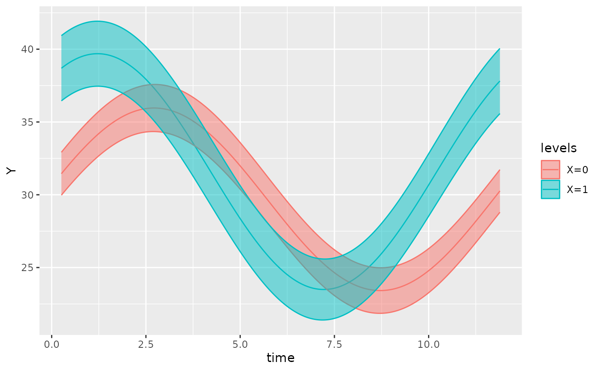
This function also allows users to superimpose the datapoints (that
the fit is based on) over the fitted model, using the
superimpose.data = TRUE argument:
object <- cosinor.glmm(Y ~ X + amp_acro(time,
group = "X",
period = 12),
data = vitamind)
autoplot(object, x_str = "X", superimpose.data = TRUE)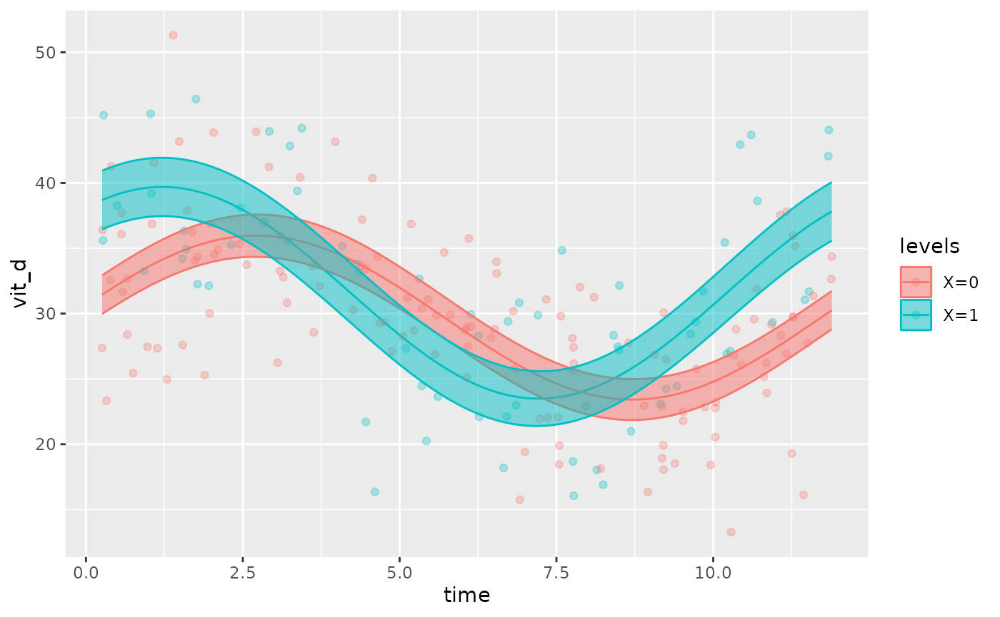
If there are multiple factors in the model, the user can specify which covariate to be plotted using the x_str argument which accepts a string corresponding to a group name within the original dataset. By default, x_str = NULL and the intercept is plotted (all group levels = 0).
The following examples demonstrate how x_str can be used to produce
different plots for the same model. Note how predict.ribbon
can be set to FALSE to remove the prediction interval from
the plots.
testdata_two_components_mod <- testdata_two_components
testdata_two_components_mod$X <- rbinom(length(testdata_two_components$group),
2,
prob = 0.5)
object <- cosinor.glmm(Y ~ group + amp_acro(times,
n_components = 2,
period = c(12, 6),
group = c("group", "X")),
data = testdata_two_components_mod,
family = poisson())
autoplot(object, predict.ribbon = FALSE)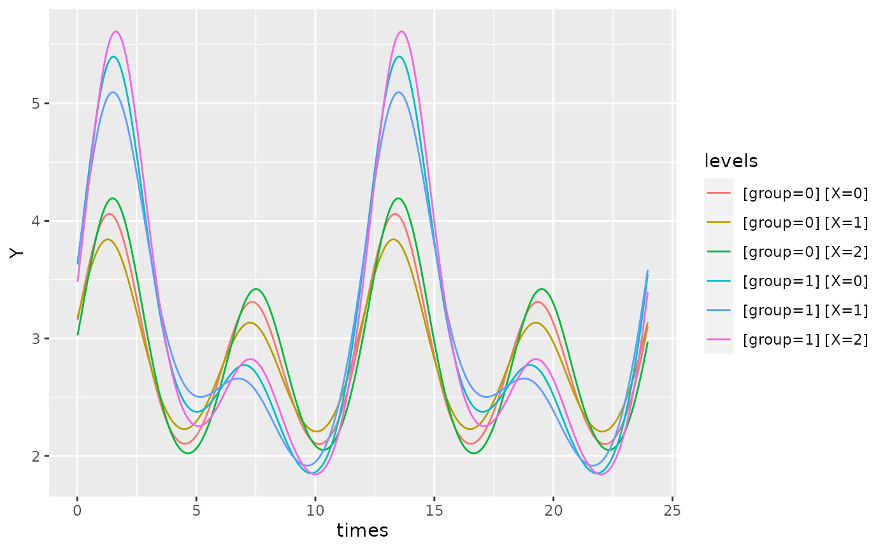
object <- cosinor.glmm(Y ~ group + amp_acro(times,
n_components = 2,
period = c(12, 6),
group = c("group", "X")),
data = testdata_two_components_mod,
family = poisson())
autoplot(object, x_str = "X", predict.ribbon = FALSE)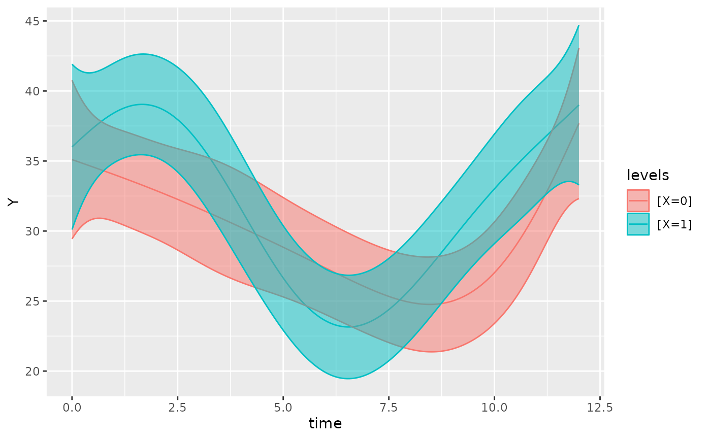
object <- cosinor.glmm(Y ~ group + amp_acro(times,
n_components = 2,
period = c(12, 6),
group = c("group", "X")),
data = testdata_two_components_mod,
family = poisson())
autoplot(object, x_str = "group", predict.ribbon = FALSE)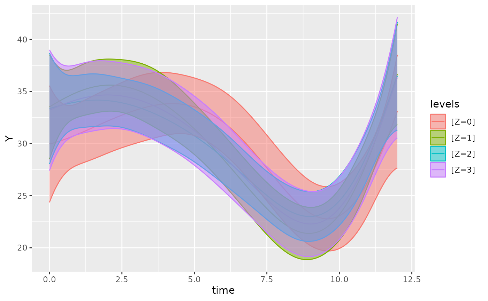
By default, xmin will be set to the minimum time value
in the time vector of the original dataframe, and xmax will
be set to the maximum time value. If we want to focus on a specific
region of the plot, we can define use the xlims argument to
specify the x-bounds.
For example, on the plot above, we can adjust the xlimits:
object <- cosinor.glmm(Y ~ group + amp_acro(times,
n_components = 2,
period = c(12, 6),
group = c("group", "X")),
data = testdata_two_components_mod,
family = poisson())
autoplot(object, x_str = "group", predict.ribbon = TRUE, xlims = c(13, 15))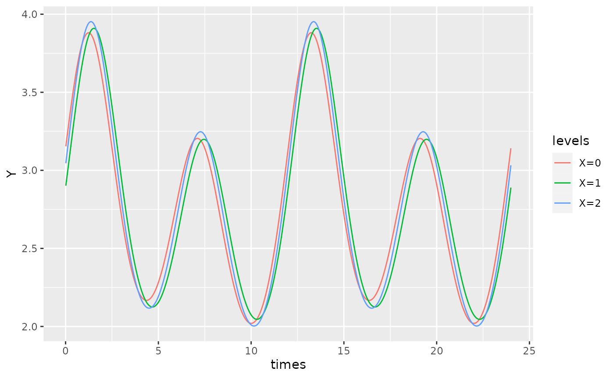
To increase the resolution of the plots, the
pred.length.out can be increased. If there are multiple
periods, the function will automatically generate an appropriate number
of points to plot such that the smallest period has sufficient
resolution to appreciate cosinor behaviour. This can be adjusted using
the points_per_min_cycle_length argument which is 20 by
default.
object <- cosinor.glmm(Y ~ amp_acro(times,
n_components = 2,
period = c(12, 1000)),
data = testdata_period_diff,
family = poisson())
autoplot(object, points_per_min_cycle_length = 40)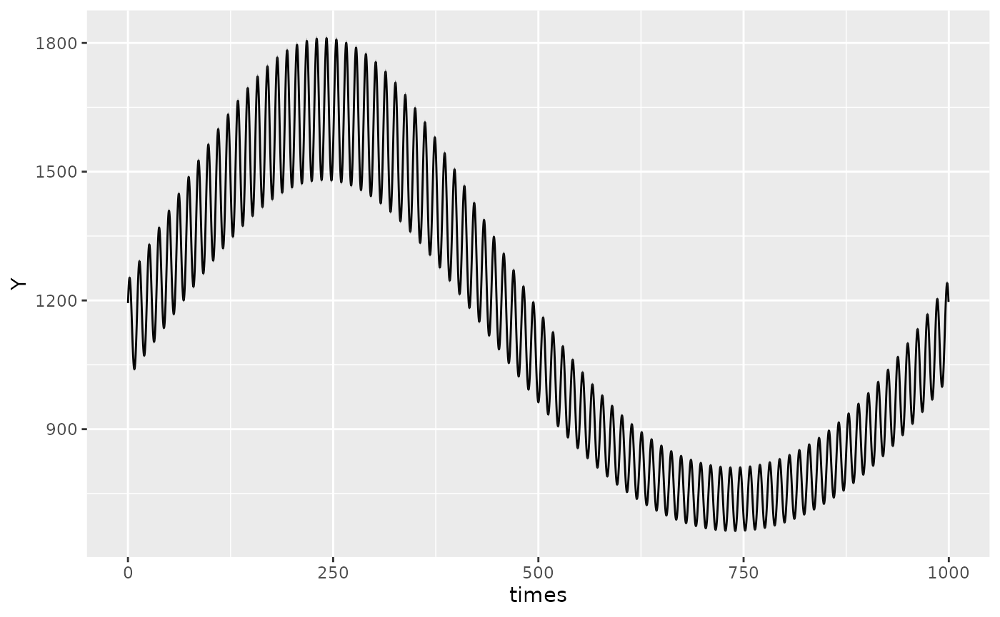
Polar plots
In addition to time-response plots, the GLMMcosinor package also allows users to create polar plots. In these plots, the plotted point represents the acrophase estimate, and the radius represents the amplitude estimate for a given component. The ellipses represent confidence regions.
The angle units in the plot can be specified with the
radial_units argument. By default, the units are in radians
where a complete revolution of the plot \((2\pi)\) represents the period for that
component. The units can be changed to degrees (where \(360^\circ\) represents the period), or even
to be expressed in the same units as the period specification and time
variable in the data used to fit the model.
By default, the function creates polar plots for all components and
combines them together using the make_cowplot = TRUE argument. If the
user wishes to plot just one component, they can specify this by using
component_index.
The direction that the angle increases in can be changed with the
clockwise argument, and the location of the angle = 0
starting point can be specified with the start argument.
Hence, if the user wishes to create a polar plot that resembles a clock,
this can be done by specifying clockwise = TRUE and
start = "top".
The argument: overlay_parameter_info can be used to
create a line extending from the origin to the parameter estimate (to
visualise the amplitude estimate), and a circular arc extending from the
angle starting position (at 0) to the acrophase estimate.
The background grid can also be customised. The argument
grid_angle_segments is used to specify how many sectors the
polar grid has, and the `n_breaks` argument can be used to specify the
number of concentric circles that make up the polar grid.
If the user wishes to zoom into the confidence ellipses to show
relevant information, they can adjust the view from the default
full (which plots a full view of the polar plot) to ‘zoom’
(which enlarges the smallest view window containing all confidence
ellipses), or zoom_origin (which enlarges the smallest view
window containing all confidence ellipses AND the origin).
model <- cosinor.glmm(Y ~ X + amp_acro(time,
group = "X",
period = 12),
data = vitamind)
polar_plot(model)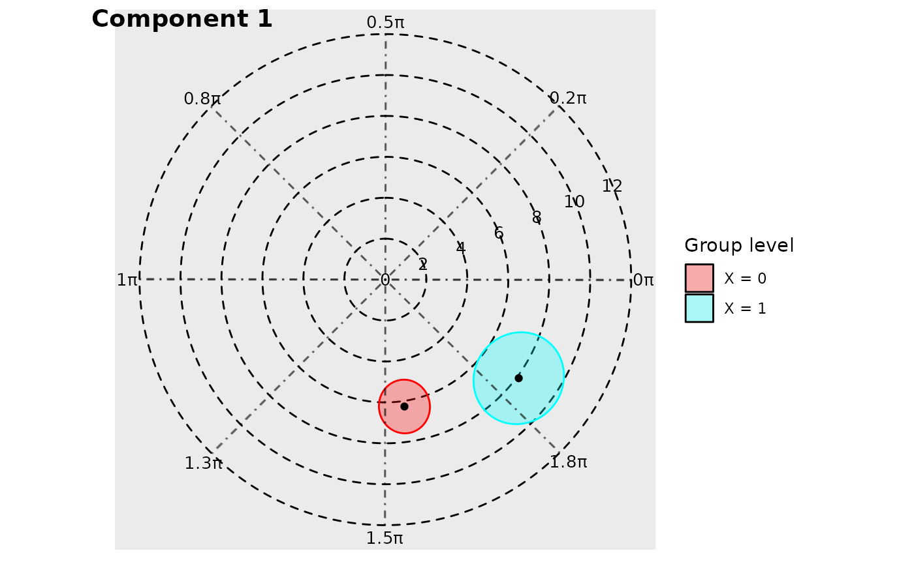
The angle units in the plot can be specified with the ‘radial_units’ argument. By default, the units are in radians where a complete revolution of the plot (2*pi) represents the maximum period from the model. The units can be changed to degrees, or even to be expressed in the same units as the period specification.
model <- cosinor.glmm(Y ~ X + amp_acro(time,
group = "X",
period = 12),
data = vitamind)
polar_plot(model, radial_units = "degrees")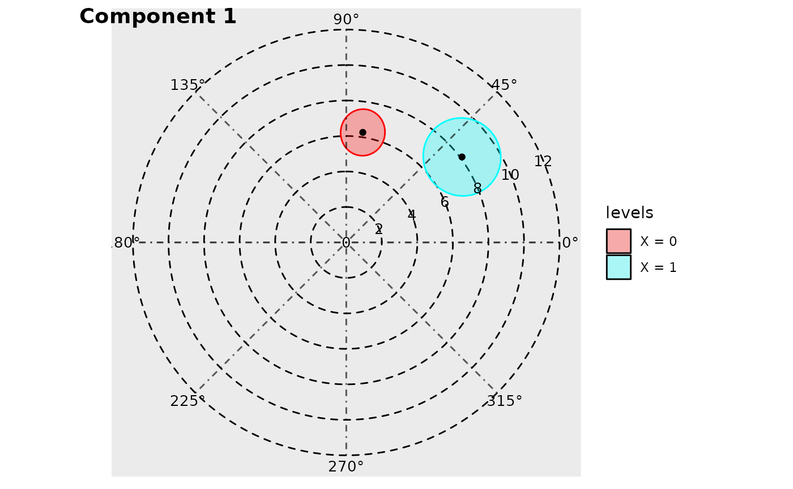
By default, the function creates creates polar plots for all components and stiches them together using the make_cowplot = TRUE argument. If the user wishes to plot just one component, they can specify this by using ‘component_index’, though the ‘make_cowplot’ argument must be FALSE for this to register.
The direction that the angle increases in can be changed with the clockwise argument, and the location of the angle = 0 starting point can be specified with the ‘start’ argument. Hence, if the user wishes to create a polar plot that resembles a clock, this can be done by specifying clockwise = TRUE and start = “top”.
The argument: overlay_parameter_info can be used to create a line extending from the origin to the parameter estimate (to visualise the amplitude estimate), and a circular arc extending from the angle starting position (at 0) to the acrophase estimate.
model <- cosinor.glmm(Y ~ X + amp_acro(time,
group = "X",
period = 12),
data = vitamind)
polar_plot(model, overlay_parameter_info = TRUE)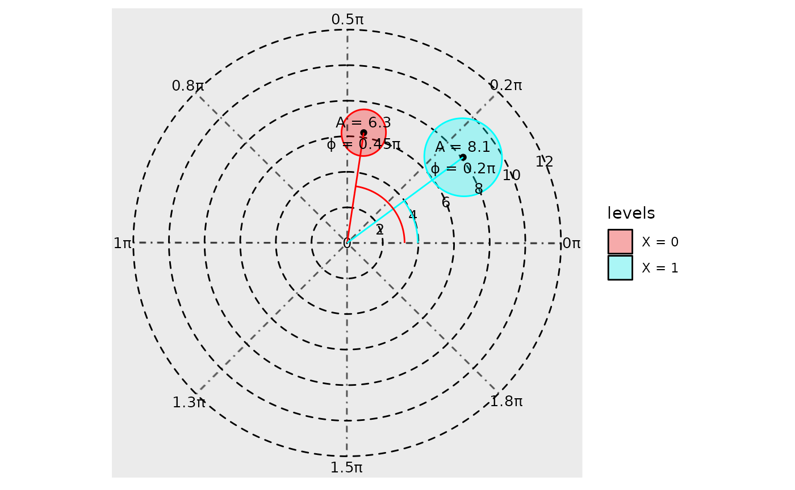
The background grid can also be customised. The argument
grid_angle_segments is used to specify how many sectors the
polar grid has, and the n_breaks argument can be used to
specify the number of concentric circles.
model <- cosinor.glmm(Y ~ X + amp_acro(time,
group = "X",
period = 12),
data = vitamind)
polar_plot(model,
grid_angle_segments = 12,
clockwise = TRUE,
start = "top",
n_breaks = 5)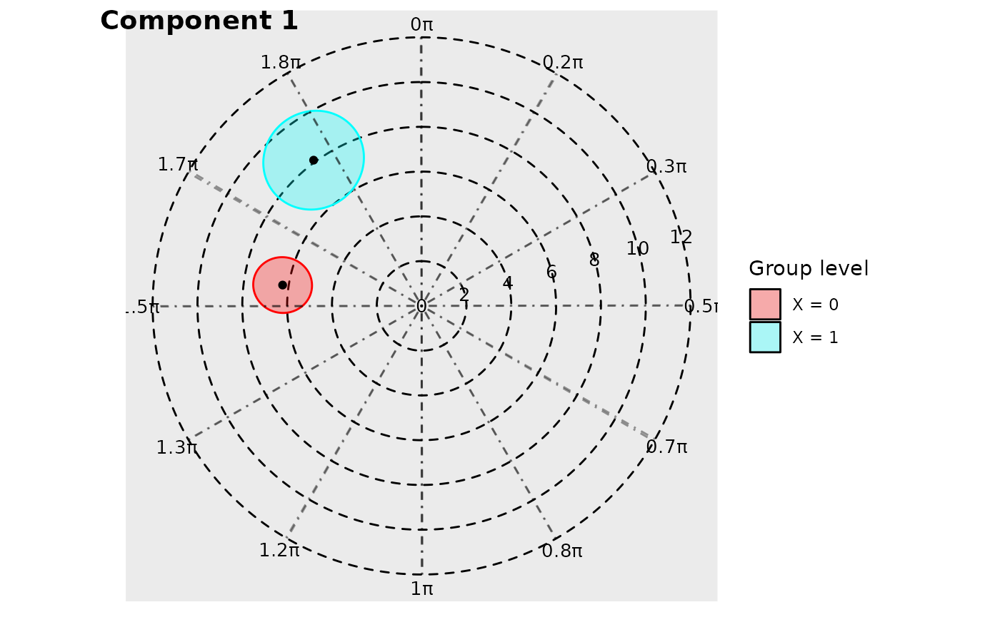
If the user wishes to zoom into the confidence ellipses to show releveant information, they can adjust the view from the default ‘full’ (which plots a full view of the polar plot) to ‘zoom’ (which enlarges the smallest view window containing all confidence ellipses), or ‘zoom_origin’ (which enlarges the smallest view window containing all confidence ellipses AND the origin).
model <- cosinor.glmm(Y ~ X + amp_acro(time,
group = "X",
period = 12),
data = vitamind)
polar_plot(model,
grid_angle_segments = 12,
clockwise = TRUE,
start = "top",
view = "zoom_origin"
)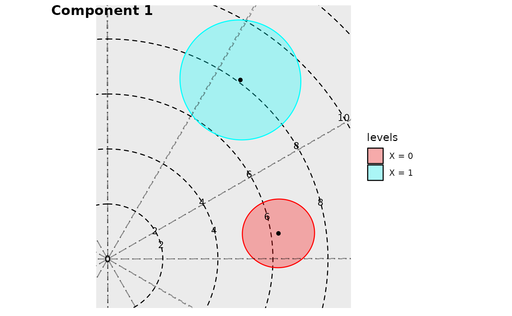